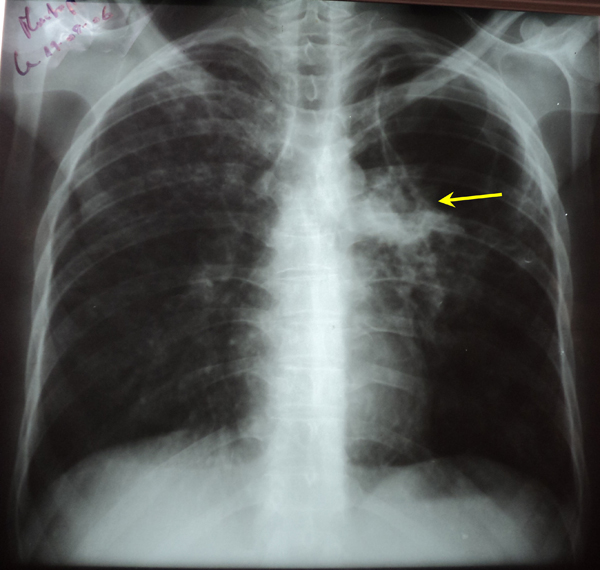

Réponses cas clinique N°8
1- La radiographie thoracique de face objective un poumon distendu emphysémateux avec une opacité parahilaire gauche dense hétérogène mal limitée effaçant le bord moyen gauche du cœur avec une excavation centrale et images nodulaires stellites (flèche).
On note également la présence d’opacités infiltratives et nodulaires du tiers supérieur de l’hémithorax droit.
2- La conduite à tenir thérapeutique sera :
- L’hospitalisation devant la présence de signes de gravité qui sont polypnée et le tirage.
- Une antibiothérapie : vu le début brutal, le contexte infectieux, le type des lésions radiologiques et l’absence de comorbidité on évoque plus une infection à pneumocoque ou à bacille gram négatif et on démarre un traitement à base d’amoxicilline-acide clavulanique avec réévaluation clinique et radiologique 48 heures après.
- Un traitement hémostatique.
3- Devant la non amélioration sous traitement antibiotique, l’altération de l’état général et l’évolution sur une année on suspecte une tuberculose pulmonaire commune et il faut réaliser une intradermoréaction à la tuberculine avec la recherche de BK dans les expectorations : examen direct et culture.
Chez ce patient : l’intradermoréaction à la tuberculine est positive à 14mm et la recherche de BK dans les expectorations était positive à l’examen direct.
Donc : la tuberculose pulmonaire commune peut se présenter dans un tableau aigu et doit être suspectée devant la non amélioration après un traitement antibiotique bien conduit.
